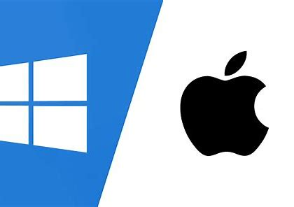
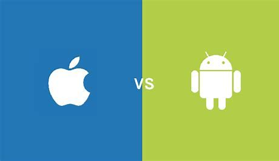

operating systems become essential for any machine but they began and how they envolved over time.let 's take a look :
before 1950s,computers lacked operating systems due to their limited capabilities. Instead,they used machine language and assembly language to run a specific program and they used paper cards and magnetic tapes for ddata storage. There is no debugging,no programming language and the program need the full hardwre so all the componen work for one task and consumes a lot of power and time to excute this program. In the 1950s ,assemblers became more advanced and became a key role of the advancement of computers and programming languages.
machines don't understand human language because they are using binary number language this binary digital number called bit and it has two values 1 to say that the instruction work and 0 to say that it doesn't work.thanks to mathematic programmers make a translator to understand this bit language called compiler and to develop programs easier .the rise of compiler and programming languages is a game changer for technology and this allow for more capabalitie to do more complex tasks
GMOS is developed in 1950s and it uses batches to organise tasks in the operating systems.the operating system is efficiant and it was made for IBM computers. tasks are grouped into one batch and the batch processing system excute task by task.
Unlike batches that excute single task in one time, multi programming allow to do many tasks at the same time. DEC PDP and MS DOS were introduced betwenn 1960s and 1980s.
with the introduction of machintoch and personal computing in 1980s,computers become more ppular specially with the rise of Windows operating system by microsoft.useers can do many tasks with a click in the mouse instead of writing commands with the keyboard.  and still to these days ,graphical user interface operating systems became a part of every machine even cellphones with the rise of Android and IOS. 